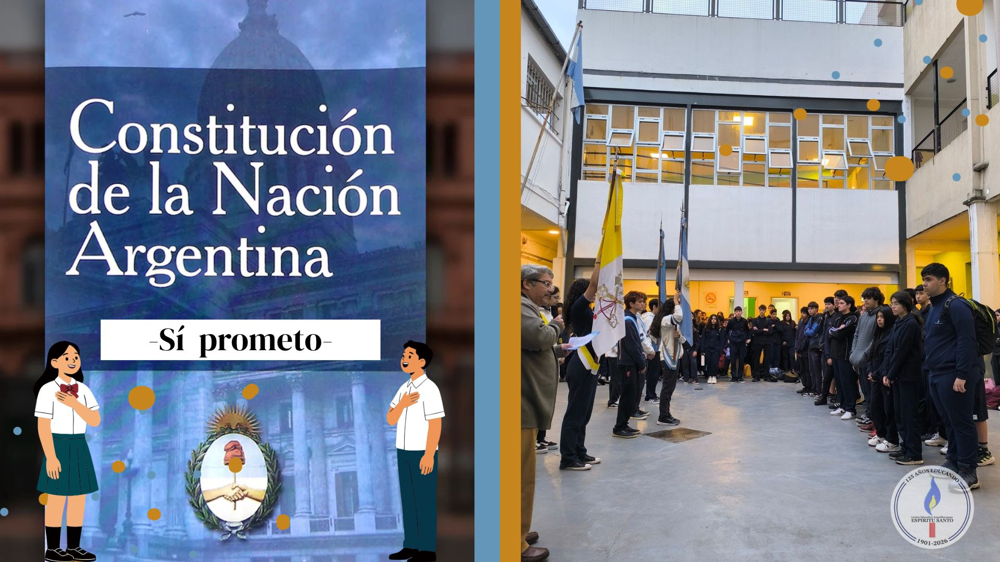

DISCURSO 1° DE MAYO - Versión 2026
Por: Prof.Guillermo Garofalo

Buenos días a toda la comunidad educativa.
Hoy nos reunimos para reflexionar sobre una fecha tan significativa. El pasado viernes 1° de mayo conmemoramos el Día Internacional de los Trabajadores. Es una jornada que nos invita no solo a recordar, sino a pensar qué significa el trabajo hoy.
Si viajamos a 1886, a Chicago, nos encontramos con una realidad durísima: jornadas de hasta 16 horas, sueldos que no alcanzaban para vivir, niños de 6 años en fábricas y mujeres trabajando de noche para sumar un ingreso. El hartazgo llevó a que, un 1° de mayo, más de 340 mil obreros pararan 5000 fábricas. El reclamo era claro: jornada de 8 horas. La respuesta del poder fue la represión, que días después derivó en la Masacre de Haymarket. Nada justifica que se haya llegado a semejante violencia. La consecuencia de esa represión fue que la lucha por condiciones dignas tomó una fuerza irreversible. Gracias a esa lucha sostenida por generaciones, hoy el artículo 14 bis de nuestra Constitución Nacional reconoce los derechos laborales.
Pasaron 140 años desde Chicago. El mundo cambió, pero ¿cuánto? El 1° de mayo sigue siendo una fecha de memoria y de bandera. Porque si miramos nuestro presente, vemos que la lucha no terminó. Este mismo año, en Argentina, se aprobaron medidas que legalizan jornadas de hasta 12 horas bajo la figura de “banco de horas” o esquemas de flexibilización. A 140 años de aquella huelga, volvemos a discutir lo que ya estaba saldado: Legalizar el agotamiento no es modernización: es retroceso.
A esto se suman problemas que persisten: salarios que no cubren la canasta básica, trabajo no registrado y, lo más doloroso, el trabajo infantil que todavía le roba la infancia y la escuela a muchos chicos y chicas. Sin educación no hay forma de conocer nuestros derechos ni de proyectar un futuro con oportunidades.
En estos tiempos, los desafíos del mundo laboral son otros: la precarización, la inestabilidad, el avance de la tecnología que reemplaza puestos, las amenazas de despido como forma de disciplinamiento. Son formas nuevas de viejos problemas: poner la ganancia por encima de la dignidad.
Por eso, el 1° de mayo no puede ser solo un feriado en el calendario. Es un día para honrar a quienes lucharon por condiciones dignas y para preguntarnos qué hacemos nosotros. Como estudiantes, tenemos el privilegio de formarnos, de entender la historia y de prepararnos para ser trabajadores con conciencia. Como parte de esta escuela, valoramos el trabajo docente y no docente que la sostiene todos los días.
Que esta fecha nos sirva para tres cosas: agradecer si tenemos un trabajo o la posibilidad de estudiar para tenerlo, comprometernos con quienes hoy no acceden a derechos básicos, y sostener la memoria activa. La dignidad no se negocia y los derechos se defienden todos los días.
Porque las condiciones laborales dignas no son solo una cantidad de horas: son salario justo, estabilidad, seguridad, respeto y tiempo para vivir. Que ese piso de dignidad, conquistado con tanto esfuerzo hace 140 años, no nos lo arrebaten hoy con una firma.
Muchas gracias.